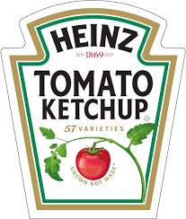

Table of contents:
So what is Ketchup? Ketchup is a savoury and sweet sauce that usually contains tomatoes, sugar, vinegar, salt, and spices. It is usually used as a condiment but can also be found as a flavour for many popular snack items like chips. In no particular order, here are some foods that pair very well with Ketchup.

From cleaning pots with Ketchup to Ketchup having a dedicated day, here are some facts about everyone's favourite condiment, Ketchup.
Ketchup is a very widely-used and popular condiment around the world. It is a staple condiment that we see paired with many foods, and it's very well liked by many. It is reported that 97% of American families have a bottle of Ketchup at their dinner table. This was also the case back in the 17th century! Well, it wasn't as popular as it is now, but it was still very well-liked. Ketchup originated in China during the 17th century. However, the “Ketchup” that the Chinese had was nothing similar to the Ketchup that we know and love today, as it consisted of pickled fish and spices. The word “Ketchup” comes from the Hokkien Chinese word, kê-tsiap, which was the name of the fish sauce.
By the 18th century, the British had found and tasted the fish sauce in Asia. They enjoyed the sauce so much that they took it back home to try and replicate it. The British version of “Ketchup” was still very different than the one we have today. British “Ketchup” usually consisted of mushrooms, walnuts, oysters, or anchovies as the main ingredient. But where was the main ingredient of Ketchup today, the tomato? The first tomato Ketchup recipe came out in 1812. This Ketchup was quite successful since it could be stored for around a year. However, a long shelf life came at a steep price. Companies would often douse their Ketchup in harmful preservatives like coal tar, which made many people unhappy. Enter 1876, when a man named Henry J. Heinz started producing tomato Ketchup without preservatives. He was convinced that consumers didn't like preservatives in their food, so he used fresh, ripe tomatoes that had a natural preservative in it, pectin. To help prolong it's shelf life even longer, Henry drastically increased the amount of vinegar in his Ketchup, and it soon ruled the market. In 1905, Henry's company had sold five million bottles of Ketchup.
 The Heinz company was founded in 1869 and was named after Henry J. Heinz. He founded Heinz Noble & Company with his friend, L. Clarence Noble, and began making horseradish. But this company wasn't the one that produced the world-famous Ketchup we know today. Needless to say, Heinz's horseradish company was a big flop, and his company went bankrupt in 1875. Undeterred by this failure, Heinz decided to open another company, F & J Heinz, in 1876, this time partnering with his brother John Heinz, and his cousin Frederick Heinz. One of the first things this new company did was make Tomato Ketchup. In 1888, Henry took over the company and renamed the company as the “H. J. Heinz Company”. This was the start of one of the largest food companies today.
It is very simple to make your own delicious Ketchup at home. This recipe is simple to make and has little to no cleanup. Try it out.